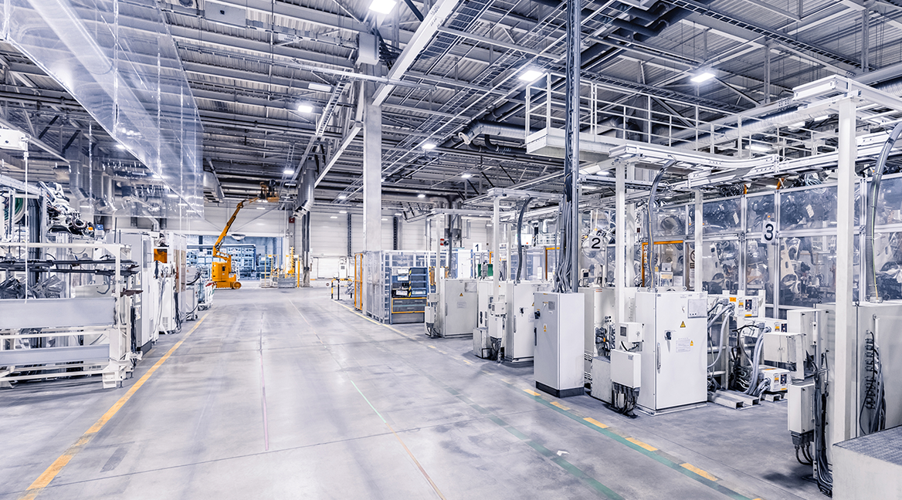
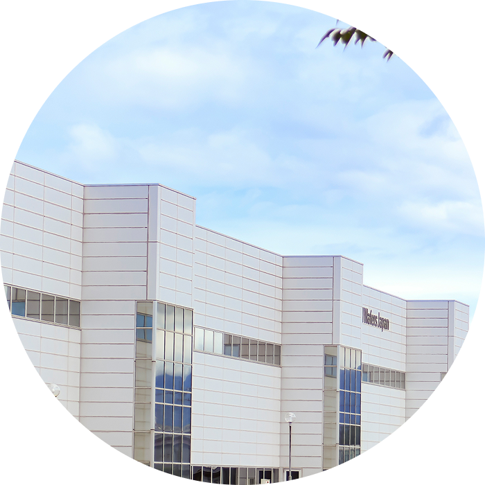

お仕事お探しの方、転職をお考えの方
こんなお悩みはございませんか？
- なかなか良い仕事が見つからない
- 安定的で有名な企業で働きたい
- 今の会社ではスキルが身につかないのでスキルアップをしたい
- 経験を活かしてもっとキャリアアップ、給料アップしたい
- もっとスケールの大きい仕事をしたい
ここが違う！
SASAKI CONNECTの3つのポイント
-
POINT
1
 - 安定の大手製造業で
仕事ができる！ - 当社のお仕事は、半導体製造装置や航空宇宙防衛関係の製品など名だたる大手製造業の企業様が多く、スケールが大きい一流の技術に触れる現場で仕事ができます。
- 安定の大手製造業で
-
POINT
2
- スキルアップができます！
- お仕事の中には海外での装置組立業務もございます。
業務を通して、他の派遣会社や製造業ではなかなか経験できないスキルを身につけることができます。
-
POINT
3
- 付加価値の高い業務経験で
キャリアアップも - 専門的なスキルを要する付加価値の高い業務が多いことから時給や給与が他社より高くご提示できます。
将来のキャリアアップの第一歩にもぜひ。
- 付加価値の高い業務経験で
あなたのキャリアアップを応援！
SASAKI CONNECTが紹介するお仕事はこちら
-
- 半導体製造装置の立ち上げ業務
- 海外での半導体製造装置の立ち上げ業務に携わるお仕事です。
機器部品の設置や動作チェック、検査修正など製品クオリティに関わる重要な業務をお任せいたします。
-
- 半導体製造装置の組立業務
- お客様の構内にて半導体製造装置の組立業務をお任せいたします。
半導体製造装置は多種多様な装置がございますので現場で学びながら業務を遂行いたします。
-
- 半導体製造装置の組立サポート
- 半導体製造装置の組立だけではなく、組立におけるサポート業務もございます。主に仕様書作成から工程管理、工具管理、設計サポートなど製造現場を中枢を担う業務です。
-
- 航空宇宙・防衛関係製品の製造
- お客様の構内にて航空宇宙関係製品や防衛関係製品の製造を行います。精密機器や飛行機部品などの製造現場に携わります。
正社員・派遣社員
どちらもあなた次第！
-
- 正社員（正社員は職業紹介が主となります）
- 月給制・賞与支給はもちろん、諸待遇は完備！
安心の環境で製造業のプロフェッショナルとしてご活躍いただきます。※基本的に職業紹介でのご紹介ですが、当社SASAKI CONNECTでの正社員もございます。
-
- 派遣社員
- 派遣社員は、ご希望やお住まいの場所を考慮して勤務いただくケースがほとんどです。なお、派遣社員も有給休暇はございますし、交通費も支給いたします。
SASAKI CONNECTで働くスタッフたちも高評価！
高い満足度のヒミツ
-
- ヒミツその1
- 大手企業の案件を多く持っており、
働く環境が良い - SASAKI CONNECTは大手企業が多いことはもとより、市場価値の高いお仕事紹介案件が多くございます。ステップアップしたい方や正社員を目指したい人にとって、さらなるキャリアアップや待遇アップが期待できるでしょう。
また、何かしらの製造業の現場を経験されている方であれば、ご自身の経歴を活かして飛躍的に成長することも見込めます。ぜひご相談ください。
 -
- ヒミツその2
- スタッフへのフォローがマメなので
安心して働ける！ - SASAKI CONNECTが自慢にしていること、それは「当社スタッフはマメにフォローをする」ことです。スタッフの皆様でお仕事が成り立っていますのでお仕事における疑問や不安など小さなことから対応させていただいております。ありがたいことに、働いている皆様にも「SASAKI CONNECTでは安心して働ける！」と評判いただけております。
- 当社では正社員になりたい方も大歓迎です！
- 派遣社員には有給休暇や交通費支給がございますが、正社員になるとこれらに加えて、賞与支給や昇進のチャンスもございます。
また当社親会社の株式会社ササキ主催の各種イベント（社員旅行やBBQ、忘年会、お花見など）にもご参加いただくことができます。
会社を通して、キャリアアップはもちろん一生の仲間ができる…そういったことにつながれば幸いです。
喜びの声も！
スタッフさんたちのビフォーアフター
-
- 山梨県在住 Y.M.さん（20代）
- 前職
- これまで製造業、飲食業、営業職等さまざまな職種を経験してきました。しかし、もう一度製造業の現場でスキルを身に付けたいという思いが強くなり、転職を決意しました。
- 前職
- 現在は製造業で、新しい技術を学びながら、着実にスキルを磨いています。
手を動かしてものを作り上げる喜びを
日々実感しており、将来に向けた自信が付いてきています。
-
- 宮城県在住 M.Y.さん（30代）
- 前職
- 地元（愛知県）のカーディーラーで整備士、海外企業向けの商社で働いていました。ですが、もっと幅広いスキルを身につけたい、特に海外での経験を積みたいと思い転職を決意しました。
- 前職
- 装置組立に関しては未経験での入社になりましたが、ベテラン社員さんからの手厚い研修によりサポートを受けながら業務にあたれています。現在はエンジニアとして海外で装置の組立業務に従事しています。実際に現地での立ち上げ作業を行い、異文化環境の中で技術力と柔軟な対応力を磨いています。
-
- 長野県在住 Y.N.さん（30代）
- 前職
- 地元の自動車部品工場で働いた後、派遣社員としてさまざまな現場を経験しました。その中で、大規模なプロジェクトに携わる現場を見学し、自分もこんなスケールの大きな仕事に関わりたいと思いました。
- 前職
- 現在は航空宇宙・防衛関連の製品製造に携わっています。
精密さと責任が求められる仕事にやりがいを感じ、スキルアップを実感しています！
経験者の方は今までのスキルを活かしながら、さらに成長できるフィールドをご用意しています。 それぞれの個性や強みを活かして輝ける場所が、私たちの職場です！（採用担当 久保田）
お仕事開始までの流れ
入社に関する
よくあるご質問
-
基本給が少ないように感じますが他に手当はありますか？
諸手当が充実しています！
基本給の他に、月間無事故達成で無事故手当を支給。通勤手当、家族手当、住宅手当など、通勤距離や家族構成により決まる諸手当もあります。また、有資格者業務担当に選任されると資格手当が支給されます。残業代は25時間分を予め月額固定支給、25時間超は別途支給となります。深夜割増は法定を大きく超える3割増。とにかく諸手当が充実していますので、一度お問合せください。あなたの条件で月収試算致します。